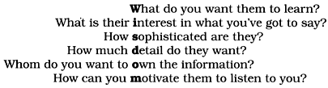

What distinguishes Pragmatic Programmers? We feel it's an attitude, a style, a philosophy of approaching problems and their solutions. They think beyond the immediate problem, always trying to place it in its larger context, always trying to be aware of the bigger picture. After all, without this larger context, how can you be pragmatic? How can you make intelligent compromises and informed decisions?
Another key to their success is that they take responsibility for everything they do, which we discuss in The Cat Ate My Source Code. Being responsible, Pragmatic Programmers won't sit idly by and watch their projects fall apart through neglect. In Software Entropy, we tell you how to keep your projects pristine.
Most people find change difficult to accept, sometimes for good reasons, sometimes because of plain old inertia. In Stone Soup and Boiled Frogs, we look at a strategy for instigating change and (in the interests of balance) present the cautionary tale of an amphibian that ignored the dangers of gradual change.
One of the benefits of understanding the context in which you work is that it becomes easier to know just how good your software has to be. Sometimes near-perfection is the only option, but often there are trade-offs involved. We explore this in Good-Enough Software.
Of course, you need to have a broad base of knowledge and experience to pull all of this off. Learning is a continuous and ongoing process. In Your Knowledge Portfolio, we discuss some strategies for keeping the momentum up.
Finally, none of us works in a vacuum. We all spend a large amount of time interacting with others. Communicate! lists ways we can do this better.
Pragmatic programming stems from a philosophy of pragmatic thinking. This chapter sets the basis for that philosophy.
The greatest of all weaknesses is the fear of appearing weak.
• J. B. Bossuet, Politics from Holy Writ, 1709
One of the cornerstones of the pragmatic philosophy is the idea of taking responsibility for yourself and your actions in terms of your career advancement, your project, and your day-to-day work. A Pragmatic Programmer takes charge of his or her own career, and isn't afraid to admit ignorance or error. It's not the most pleasant aspect of programming, to be sure, but it will happen—even on the best of projects. Despite thorough testing, good documentation, and solid automation, things go wrong. Deliveries are late. Unforeseen technical problems come up.
These things happen, and we try to deal with them as professionally as we can. This means being honest and direct. We can be proud of our abilities, but we must be honest about our shortcomings—our ignorance as well as our mistakes.
Responsibility is something you actively agree to. You make a commitment to ensure that something is done right, but you don't necessarily have direct control over every aspect of it. In addition to doing your own personal best, you must analyze the situation for risks that are beyond your control. You have the right not to take on a responsibility for an impossible situation, or one in which the risks are too great. You'll have to make the call based on your own ethics and judgment.
When you do accept the responsibility for an outcome, you should expect to be held accountable for it. When you make a mistake (as we all do) or an error in judgment, admit it honestly and try to offer options.
Don't blame someone or something else, or make up an excuse. Don't blame all the problems on a vendor, a programming language, management, or your coworkers. Any and all of these may play a role, but it is up to you to provide solutions, not excuses.
If there was a risk that the vendor wouldn't come through for you, then you should have had a contingency plan. If the disk crashes—taking all of your source code with it—and you don't have a backup, it's your fault. Telling your boss "the cat ate my source code" just won't cut it.
Tip 3
Provide Options, Don't Make Lame Excuses
Before you approach anyone to tell them why something can't be done, is late, or is broken, stop and listen to yourself. Talk to the rubber duck on your monitor, or the cat. Does your excuse sound reasonable, or stupid? How's it going to sound to your boss?
Run through the conversation in your mind. What is the other person likely to say? Will they ask, "Have you tried this..." or "Didn't you consider that?" How will you respond? Before you go and tell them the bad news, is there anything else you can try? Sometimes, you just know what they are going to say, so save them the trouble.
Instead of excuses, provide options. Don't say it can't be done; explain what can be done to salvage the situation. Does code have to be thrown out? Educate them on the value of refactoring (see Refactoring, page 184). Do you need to spend time prototyping to determine the best way to proceed (see Prototypes and Post-it Notes, page 53)? Do you need to introduce better testing (see Code That's Easy to Test, page 189, and Ruthless Testing, page 237) or automation (see Ubiquitous Automation, page 230) to prevent it from happening again? Perhaps you need additional resources. Don't be afraid to ask, or to admit that you need help.
Try to flush out the lame excuses before voicing them aloud. If you must, tell your cat first. After all, if little Tiddles is going to take the blame....
While software development is immune from almost all physical laws, entropy hits us hard. Entropy is a term from physics that refers to the amount of "disorder" in a system. Unfortunately, the laws of thermodynamics guarantee that the entropy in the universe tends toward a maximum. When disorder increases in software, programmers call it "software rot."
There are many factors that can contribute to software rot. The most important one seems to be the psychology, or culture, at work on a project. Even if you are a team of one, your project's psychology can be a very delicate thing. Despite the best laid plans and the best people, a project can still experience ruin and decay during its lifetime. Yet there are other projects that, despite enormous difficulties and constant setbacks, successfully fight nature's tendency toward disorder and manage to come out pretty well.
What makes the difference?
In inner cities, some buildings are beautiful and clean, while others are rotting hulks. Why? Researchers in the field of crime and urban decay discovered a fascinating trigger mechanism, one that very quickly turns a clean, intact, inhabited building into a smashed and abandoned derelict [WK82].
One broken window, left unrepaired for any substantial length of time, instills in the inhabitants of the building a sense of abandonment—a sense that the powers that be don't care about the building. So another window gets broken. People start littering. Graffiti appears. Serious structural damage begins. In a relatively short space of time, the building becomes damaged beyond the owner's desire to fix it, and the sense of abandonment becomes reality.
The "Broken Window Theory" has inspired police departments in New York and other major cities to crack down on the small stuff in order to keep out the big stuff. It works: keeping on top of broken windows, graffiti, and other small infractions has reduced the serious crime level.
Tip 4
Don't Live with Broken Windows
Don't leave "broken windows" (bad designs, wrong decisions, or poor code) unrepaired. Fix each one as soon as it is discovered. If there is insufficient time to fix it properly, then board it up. Perhaps you can comment out the offending code, or display a "Not Implemented" message, or substitute dummy data instead. Take some action to prevent further damage and to show that you're on top of the situation.
We've seen clean, functional systems deteriorate pretty quickly once windows start breaking. There are other factors that can contribute to software rot, and we'll touch on some of them elsewhere, but neglect accelerates the rot faster than any other factor.
You may be thinking that no one has the time to go around cleaning up all the broken glass of a project. If you continue to think like that, then you'd better plan on getting a dumpster, or moving to another neighborhood. Don't let entropy win.
By contrast, there's the story of an obscenely rich acquaintance of Andy's. His house was immaculate, beautiful, loaded with priceless antiques, objets d'art, and so on. One day, a tapestry that was hanging a little too close to his living room fireplace caught on fire. The fire department rushed in to save the day—and his house. But before they dragged their big, dirty hoses into the house, they stopped—with the fire raging—to roll out a mat between the front door and the source of the fire.
They didn't want to mess up the carpet.
A pretty extreme case, to be sure, but that's the way it must be with software. One broken window—a badly designed piece of code, a poor management decision that the team must live with for the duration of the project—is all it takes to start the decline. If you find yourself working on a project with quite a few broken windows, it's all too easy to slip into the mindset of "All the rest of this code is crap, I'll just follow suit." It doesn't matter if the project has been fine up to this point. In the original experiment leading to the "Broken Window Theory," an abandoned car sat for a week untouched. But once a single window was broken, the car was stripped and turned upside down within hours.
By the same token, if you find yourself on a team and a project where the code is pristinely beautiful—cleanly written, well designed, and elegant—you will likely take extra special care not to mess it up, just like the firefighters. Even if there's a fire raging (deadline, release date, trade show demo, etc.), you don't want to be the first one to make a mess.
The three soldiers returning home from war were hungry. When they saw the village ahead their spirits lifted—they were sure the villagers would give them a meal. But when they got there, they found the doors locked and the windows closed. After many years of war, the villagers were short of food, and hoarded what they had.
Undeterred, the soldiers boiled a pot of water and carefully placed three stones into it. The amazed villagers came out to watch.
"This is stone soup," the soldiers explained. "Is that all you put in it?" asked the villagers. "Absolutely—although some say it tastes even better with a few carrots...." A villager ran off, returning in no time with a basket of carrots from his hoard.
A couple of minutes later, the villagers again asked "Is that it?"
"Well," said the soldiers, "a couple of potatoes give it body." Off ran another villager.
Over the next hour, the soldiers listed more ingredients that would enhance the soup: beef, leeks, salt, and herbs. Each time a different villager would run off to raid their personal stores.
Eventually they had produced a large pot of steaming soup. The soldiers removed the stones, and they sat down with the entire village to enjoy the first square meal any of them had eaten in months.
There are a couple of morals in the stone soup story. The villagers are tricked by the soldiers, who use the villagers' curiosity to get food from them. But more importantly, the soldiers act as a catalyst, bringing the village together so they can jointly produce something that they couldn't have done by themselves—a synergistic result. Eventually everyone wins.
Every now and then, you might want to emulate the soldiers.
You may be in a situation where you know exactly what needs doing and how to do it. The entire system just appears before your eyes—you know it's right. But ask permission to tackle the whole thing and you'll be met with delays and blank stares. People will form committees, budgets will need approval, and things will get complicated. Everyone will guard their own resources. Sometimes this is called "start-up fatigue."
It's time to bring out the stones. Work out what you can reasonably ask for. Develop it well. Once you've got it, show people, and let them marvel. Then say "of course, it would be better if we added...." Pretend it's not important. Sit back and wait for them to start asking you to add the functionality you originally wanted. People find it easier to join an ongoing success. Show them a glimpse of the future and you'll get them to rally around.[1]
[1] While doing this, you may be comforted by the line attributed to Rear Admiral Dr. Grace Hopper: "It's easier to ask forgiveness than it is to get permission."
Tip 5
On the other hand, the stone soup story is also about gentle and gradual deception. It's about focusing too tightly. The villagers think about the stones and forget about the rest of the world. We all fall for it, every day. Things just creep up on us.
We've all seen the symptoms. Projects slowly and inexorably get totally out of hand. Most software disasters start out too small to notice, and most project overruns happen a day at a time. Systems drift from their specifications feature by feature, while patch after patch gets added to a piece of code until there's nothing of the original left. It's often the accumulation of small things that breaks morale and teams.
Tip 6
We've never tried this—honest. But they say that if you take a frog and drop it into boiling water, it will jump straight back out again. However, if you place the frog in a pan of cold water, then gradually heat it, the frog won't notice the slow increase in temperature and will stay put until cooked.
Note that the frog's problem is different from the broken windows issue discussed in Section 2. In the Broken Window Theory, people lose the will to fight entropy because they perceive that no one else cares. The frog just doesn't notice the change.
Don't be like the frog. Keep an eye on the big picture. Constantly review what's happening around you, not just what you personally are doing.
Striving to better, oft we mar what's well.
• King Lear 1.4
There's an old(ish) joke about a U.S. company that places an order for 100,000 integrated circuits with a Japanese manufacturer. Part of the specification was the defect rate: one chip in 10,000. A few weeks later the order arrived: one large box containing thousands of ICs, and a small one containing just ten. Attached to the small box was a label that read: "These are the faulty ones."
If only we really had this kind of control over quality. But the real world just won't let us produce much that's truly perfect, particularly not bug-free software. Time, technology, and temperament all conspire against us.
However, this doesn't have to be frustrating. As Ed Yourdon described in an article in IEEE Software [You95], you can discipline yourself to write software that's good enough—good enough for your users, for future maintainers, for your own peace of mind. You'll find that you are more productive and your users are happier. And you may well find that your programs are actually better for their shorter incubation.
Before we go any further, we need to qualify what we're about to say. The phrase "good enough" does not imply sloppy or poorly produced code. All systems must meet their users' requirements to be successful. We are simply advocating that users be given an opportunity to participate in the process of deciding when what you've produced is good enough.
Normally you're writing software for other people. Often you'll remember to get requirements from them.[2] But how often do you ask them how good they want their software to be? Sometimes there'll be no choice. If you're working on pacemakers, the space shuttle, or a low-level library that will be widely disseminated, the requirements will be more stringent and your options more limited. However, if you're working on a brand new product, you'll have different constraints. The marketing people will have promises to keep, the eventual end users may have made plans based on a delivery schedule, and your company will certainly have cash-flow constraints. It would be unprofessional to ignore these users' requirements simply to add new features to the program, or to polish up the code just one more time. We're not advocating panic: it is equally unprofessional to promise impossible time scales and to cut basic engineering corners to meet a deadline.
[2] That was supposed to be a joke!
The scope and quality of the system you produce should be specified as part of that system's requirements.
Tip 7
Make Quality a Requirements Issue
Often you'll be in situations where trade-offs are involved. Surprisingly, many users would rather use software with some rough edges today than wait a year for the multimedia version. Many IT departments with tight budgets would agree. Great software today is often preferable to perfect software tomorrow. If you give your users something to play with early, their feedback will often lead you to a better eventual solution (see Tracer Bullets, page 48).
In some ways, programming is like painting. You start with a blank canvas and certain basic raw materials. You use a combination of science, art, and craft to determine what to do with them. You sketch out an overall shape, paint the underlying environment, then fill in the details. You constantly step back with a critical eye to view what you've done. Every now and then you'll throw a canvas away and start again.
But artists will tell you that all the hard work is ruined if you don't know when to stop. If you add layer upon layer, detail over detail, the painting becomes lost in the paint.
Don't spoil a perfectly good program by overembellishment and over-refinement. Move on, and let your code stand in its own right for a while. It may not be perfect. Don't worry: it could never be perfect. (In Chapter 6, page 171, we'll discuss philosophies for developing code in an imperfect world.)
An investment in knowledge always pays the best interest.
• Benjamin Franklin
Ah, good old Ben Franklin—never at a loss for a pithy homily. Why, if we could just be early to bed and early to rise, we'd be great programmers—right? The early bird might get the worm, but what happens to the early worm?
In this case, though, Ben really hit the nail on the head. Your knowledge and experience are your most important professional assets.
Unfortunately, they're expiring assets.[3] Your knowledge becomes out of date as new techniques, languages, and environments are developed. Changing market forces may render your experience obsolete or irrelevant. Given the speed at which Web-years fly by, this can happen pretty quickly.
[3] An expiring asset is something whose value diminishes over time. Examples include a warehouse full of bananas and a ticket to a ball game.
As the value of your knowledge declines, so does your value to your company or client. We want to prevent this from ever happening.
We like to think of all the facts programmers know about computing, the application domains they work in, and all their experience as their Knowledge Portfolios. Managing a knowledge portfolio is very similar to managing a financial portfolio:
To be successful in your career, you must manage your knowledge portfolio using these same guidelines.
Of all these guidelines, the most important one is the simplest to do:
Tip 8
Invest Regularly in Your Knowledge Portfolio
Now that you have some guidelines on what and when to add to your knowledge portfolio, what's the best way to go about acquiring intellectual capital with which to fund your portfolio? Here are a few suggestions.
makefiles and an editor, try an IDE, and vice versa.It's important to continue investing. Once you feel comfortable with some new language or bit of technology, move on. Learn another one.
It doesn't matter whether you ever use any of these technologies on a project, or even whether you put them on your resume. The process of learning will expand your thinking, opening you to new possibilities and new ways of doing things. The cross-pollination of ideas is important; try to apply the lessons you've learned to your current project. Even if your project doesn't use that technology, perhaps you can borrow some ideas. Get familiar with object orientation, for instance, and you'll write plain C programs differently.
So you're reading voraciously, you're on top of all the latest breaking developments in your field (not an easy thing to do), and somebody asks you a question. You don't have the faintest idea what the answer is, and freely admit as much.
Don't let it stop there. Take it as a personal challenge to find the answer. Ask a guru. (If you don't have a guru in your office, you should be able to find one on the Internet: see the box on on the facing page.) Search the Web. Go to the library.[4]
[4] In this era of the Web, many people seem to have forgotten about real live libraries filled with research material and staff.
If you can't find the answer yourself, find out who can. Don't let it rest. Talking to other people will help build your personal network, and you may surprise yourself by finding solutions to other, unrelated problems along the way. And that old portfolio just keeps getting bigger....
All of this reading and researching takes time, and time is already in short supply. So you need to plan ahead. Always have something to read in an otherwise dead moment. Time spent waiting for doctors and dentists can be a great opportunity to catch up on your reading—but be sure to bring your own magazine with you, or you might find yourself thumbing through a dog-eared 1973 article about Papua New Guinea.
The last important point is to think critically about what you read and hear. You need to ensure that the knowledge in your portfolio is accurate and unswayed by either vendor or media hype. Beware of the zealots who insist that their dogma provides the only answer—it may or may not be applicable to you and your project.
Never underestimate the power of commercialism. Just because a Web search engine lists a hit first doesn't mean that it's the best match; the content provider can pay to get top billing. Just because a bookstore features a book prominently doesn't mean it's a good book, or even popular; they may have been paid to place it there.
Tip 9
Critically Analyze What You Read and Hear
Unfortunately, there are very few simple answers anymore. But with your extensive portfolio, and by applying some critical analysis to the torrent of technical publications you will read, you can understand the complex answers.
I believe that it is better to be looked over than it is to be overlooked.
• Mae West, Belle of the Nineties, 1934
Maybe we can learn a lesson from Ms. West. It's not just what you've got, but also how you package it. Having the best ideas, the finest code, or the most pragmatic thinking is ultimately sterile unless you can communicate with other people. A good idea is an orphan without effective communication.
As developers, we have to communicate on many levels. We spend hours in meetings, listening and talking. We work with end users, trying to understand their needs. We write code, which communicates our intentions to a machine and documents our thinking for future generations of developers. We write proposals and memos requesting and justifying resources, reporting our status, and suggesting new approaches. And we work daily within our teams to advocate our ideas, modify existing practices, and suggest new ones. A large part of our day is spent communicating, so we need to do it well.
We've put together a list of ideas that we find useful.
Probably the most difficult part of the more formal styles of communication used in business is working out exactly what it is you want to say. Fiction writers plot out their books in detail before they start, but people writing technical documents are often happy to sit down at a keyboard, enter "1. Introduction," and start typing whatever comes into their heads next.
Plan what you want to say. Write an outline. Then ask yourself, "Does this get across whatever I'm trying to say?" Refine it until it does.
This approach is not just applicable to writing documents. When you're faced with an important meeting or a phone call with a major client, jot down the ideas you want to communicate, and plan a couple of strategies for getting them across.
You're communicating only if you're conveying information. To do that, you need to understand the needs, interests, and capabilities of your audience. We've all sat in meetings where a development geek glazes over the eyes of the vice president of marketing with a long monologue on the merits of some arcane technology. This isn't communicating: it's just talking, and it's annoying.[5]
[5] The word annoy comes from the Old French enui, which also means "to bore."
Form a strong mental picture of your audience. The acrostic WISDOM, shown in Figure 1.1 on the following page, may help.
Figure 1.1. The wisdom acrostic—understanding an audience

Say you want to suggest a Web-based system to allow your end users to submit bug reports. You can present this system in many different ways, depending on your audience. End users will appreciate that they can submit bug reports 24 hours a day without waiting on the phone. Your marketing department will be able to use this fact to boost sales. Managers in the support department will have two reasons to be happy: fewer staff will be needed, and problem reporting will be automated. Finally, developers may enjoy getting experience with Web-based client-server technologies and a new database engine. By making the appropriate pitch to each group, you'll get them all excited about your project.
It's six o'clock on Friday afternoon, following a week when the auditors have been in. Your boss's youngest is in the hospital, it's pouring rain outside, and the commute home is guaranteed to be a nightmare. This probably isn't a good time to ask her for a memory upgrade for your PC.
As part of understanding what your audience needs to hear, you need to work out what their priorities are. Catch a manager who's just been given a hard time by her boss because some source code got lost, and you'll have a more receptive listener to your ideas on source code repositories. Make what you're saying relevant in time, as well as in content. Sometimes all it takes is the simple question "Is this a good time to talk about...?"
Adjust the style of your delivery to suit your audience. Some people want a formal "just the facts" briefing. Others like a long, wide-ranging chat before getting down to business. When it comes to written documents, some like to receive large bound reports, while others expect a simple memo or e-mail. If in doubt, ask.
Remember, however, that you are half of the communication transaction. If someone says they need a paragraph describing something and you can't see any way of doing it in less than several pages, tell them so. Remember, that kind of feedback is a form of communication, too.
Your ideas are important. They deserve a good-looking vehicle to convey them to your audience.
Too many developers (and their managers) concentrate solely on content when producing written documents. We think this is a mistake. Any chef will tell you that you can slave in the kitchen for hours only to ruin your efforts with poor presentation.
There is no excuse today for producing poor-looking printed documents. Modern word processors (along with layout systems such as LATEX and troff) can produce stunning output. You need to learn just a few basic commands. If your word processor supports style sheets, use them. (Your company may already have defined style sheets that you can use.) Learn how to set page headers and footers. Look at the sample documents included with your package to get ideas on style and layout. Check the spelling, first automatically and then by hand. After awl, their are spelling miss steaks that the chequer can knot ketch.
We often find that the documents we produce end up being less important than the process we go through to produce them. If possible, involve your readers with early drafts of your document. Get their feedback, and pick their brains. You'll build a good working relationship, and you'll probably produce a better document in the process.
There's one technique that you must use if you want people to listen to you: listen to them. Even if this is a situation where you have all the information, even if this is a formal meeting with you standing in front of 20 suits—if you don't listen to them, they won't listen to you.
Encourage people to talk by asking questions, or have them summarize what you tell them. Turn the meeting into a dialog, and you'll make your point more effectively. Who knows, you might even learn something.
If you ask someone a question, you feel they're impolite if they don't respond. But how often do you fail to get back to people when they send you an e-mail or a memo asking for information or requesting some action? In the rush of everyday life, it's easy to forget. Always respond to e-mails and voice mails, even if the response is simply "I'll get back to you later." Keeping people informed makes them far more forgiving of the occasional slip, and makes them feel that you haven't forgotten them.
Tip 10
It's Both What You Say and the Way You Say It
Unless you work in a vacuum, you need to be able to communicate. The more effective that communication, the more influential you become.